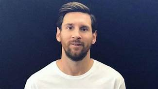

CURRICULUM VITAE GRUPO 9
Datos Personales
- Nombre: Lionel Andrés Messi Cuccittini
- Fecha de nacimiento: 24/06/1987
- Lugar de nacimiento: Rosario, Santa Fe
Formacion academica
- 1992-2000: Escuela primaria N° 66 Gral. Las Heras
Experiencia Laboral
- 1994-1999: Inferiores Newels old boys
- 2000-2005: Inferiores F.C Barcelona
- 2005-2021: Primer equipo F.C Barcelona
- 2021-Actualidad: Primer equipo PSG
Trofeos individuales
- 2009: Balon de oro, Jugador mundial de la FIFA
- 2010: FIFA balon de oro, Bota de oro
- 2011: FIFA balon de oro, Premio UEFA mejor jugador de europa
- 2012: FIFA balon de oro, Bota de oro
- 2013: Bota de oro
- 2014: Balón de Oro de la Copa Mundial de Fútbol
- 2015: Balón de Oro de la Copa América, FIFA Balón de Oro 2015, Premio UEFA al Mejor Jugador en Europa
- 2017: Bota de Oro
- 2018: Bota de Oro
- 2019: Bota de Oro, The Best FIFA 2019, Balón de Oro 2019
- 2020: Premio Laureus , Once histórico del Balón de Oro
- 2021: Balón de Oro de la Copa América